A tutorial for the projectional language
This tutorial has two jobs. Right now it's for us: to understand the language as it actually is in the code, and to find the parts that are confusing or could be simpler. Later, cleaned up, it's for showing the language to other people. The last part, What's confusing, and what could be simpler, is the reason it exists today, and it's meant to be the project's one list of open problems.
Many of the ideas here were had by other people first, and some of the code is adapted from theirs: Credits at the end says where each comes from.
Everything here can be tried in the editor: https://ersagunkuruca.github.io/language-lab/ (or open the repository's index.html locally). The examples ship with it, in the Programs list on the left: Numbers & physics (discriminant, polar, rotate, fall), Insertion sort, Eight queens, Calculus, Run backwards, Relations in programs, and two shaders, Shader: ripples and Shader: ray marching. + New program starts an empty one of your own.
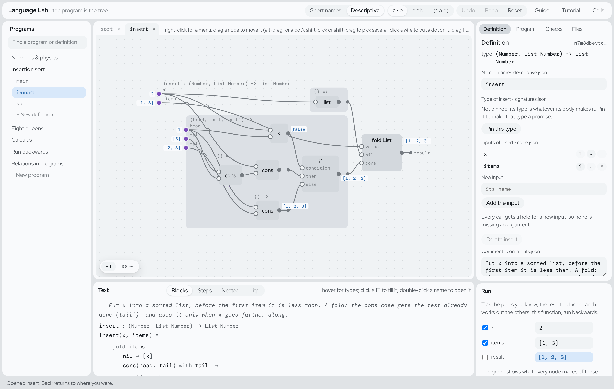
The window is in panes. The menu bar across the top switches Short names / Descriptive and the notation, and has Undo, Redo and this tutorial. The Programs outline is on the left. The graph is in the middle, with a tab for each definition you've opened, and the same definition as text below it (Blocks, Steps, Nested or Lisp). On the right, the inspector has five tabs: Definition (or Selected when something is picked; click empty graph space or press Escape to go back), Program, Checks, Files and the Guide, which a first visit opens on; Run sits above them. Drag the gutters between panes to resize them. Colour means something only in a few places: blue for what's selected and for values, purple for dots, amber for holes and refusals. Everything else is grey.
The tutorial is in three parts:
- For a five-year-old: what this is, with no programming words at all.
- For programmers who haven't done functional programming: the handful of ideas the language takes from that world, in plain words.
- The language, one idea at a time, each one in the editor.
Last brought up to date on 2026-10-22, after PR #51. The screenshots are from that build.
Part 1: For a five-year-old
Imagine a big table covered in little machines. Each machine has holes on its left where you put things in and a spout on its right where something comes out. One machine adds two numbers. One machine makes a number bigger. One machine looks at a picture and tells you whether it's a cat.
You connect the machines with strings. A string goes from one machine's spout to another machine's hole, and whatever comes out of the first goes into the second. If you want the same thing to go to two places, the string splits in two.
That's a program here: machines and strings. There's nothing to type, so you can't make a typo. If you try to tie a string to a hole where it doesn't fit, the string won't stick, and a little note tells you why.
Every machine works backwards, too. A machine that turns "how fast and how long" into "how far" can also be asked "I went this far, how long did it take?", and it figures it out. A machine that writes numbers down as words can be handed the words and asked which numbers they were.
Some holes are still empty. That's fine: the machine knows what kind of thing should go there, and when you point at the hole it shows you only the things that fit.
And each machine has a sticker with its name. You can put your own stickers on, in your own words, and the machines don't care: they still do exactly the same thing. Your friend can use their own stickers on the same table.
Part 2: For programmers who haven't done functional programming
You don't need to know Haskell or Lisp. You need six ideas, and the editor shows all of them as pictures.
1. A program is values flowing through functions
In most languages a program is a list of instructions that change things: x = 3; x = x + 1; print(x). Here a program is a description of how each value is made from other values: "the discriminant is b·b minus 4·a·c". There is no x = x + 1, because nothing changes after it's made. That's why it can be drawn: every value is a node, and every use of it is a wire.
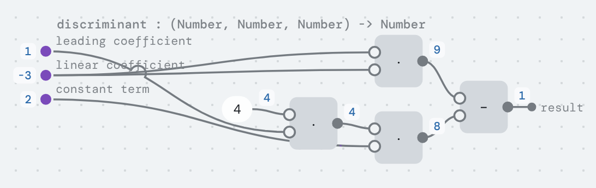
2. Functions are values too
A function is something you can pass around like a number. for each(list, action) takes a function action and calls it on every item. In the editor a function that hasn't been called yet is a frame: a box whose inputs are on its left edge and whose result leaves on its right.
3. "Let" is just naming a value so you can use it twice
column = one of(range(size)) in the queens program doesn't store anything anywhere. It means: this value, used in these two places. In the editor that's a dot on a wire with two wires coming out of it.
4. Data comes in cases
A list is either empty (nil) or an item followed by the rest of a list (cons(item, rest)). A Boolean is true or false. These are data types, and each case is a variant with fields. When you look inside a value of such a type, you say what to do in every case. That's match. if is the same thing for true/false.
5. No loops: you walk the data instead
There's no for (i = 0; i < n; i++). To do something to every item of a list, you describe what to do for nil and what to do for cons(item, rest), given the answer for rest. That's a fold. Because each step works on a smaller piece, a fold always finishes. Plain recursion (a function calling itself) is allowed too; the language works out whether it finishes, and if it can't tell, it says so in the function's type.
6. What a function does besides return a value is in its type
Printing, reading files, failing, giving several answers, and maybe never finishing are called effects. Instead of being hidden, they're listed in the function's type:
queens : (Number) -[Choice]-> List Number
main : () -[Console]-> UnitRead -[Choice]-> as "an arrow that may give several answers, or none". You never write types; the editor works them out and shows them on hover and in the frame's title.
That's all the functional programming you need.
Part 3: The language
3.1 The program is the tree; names are stickers
There is no source text. The program is stored as nodes keyed by ids in code.json. Names live in separate files (names.*.json), as do comments (comments.json), positions on the canvas (layout.json) and example inputs (examples.json). The Files tab lists them, with the program's meaning hash.
What this buys:
- No syntax errors, because there's no syntax.
- No unknown names or typos. A reference is an id you picked from a list.
- Renaming is free. It changes a names file, not the program. The meaning hash doesn't move.
- Names can collide harmlessly. Name three inputs
kand they show ask₁,k₂,k₃. Nothing is looked up by name, so there's no shadowing. - Notation is personal. The
a · b/a * b/(* a b)switch and the Short names / Descriptive switch change only what you see.
Try it. Open Numbers & physics → discriminant. Switch between Short names and Descriptive, and between the three notations. Watch the Files tab: code.json and the meaning hash never change.
3.2 Nodes and wires
A node computes a value: a function call, an if, a match, a fold, a solve. Inputs are hollow circles on its left; its output is the filled circle on its right. A wire carries a value from an output to an input.
There are no variable boxes. Every use of a variable is a wire from where that variable comes from, so a value used twice visibly fans out. In discriminant above, linear coefficient has two wires because it's used twice.
Values on wires. A small blue chip next to an output is the value it made when the definition last ran on its example inputs (the Run pane; the inputs are kept in examples.json, not in the code). That's different from a name: a name is plain text, belongs to a dot, and is part of the names file. A value is a result and changes when the inputs do. Chips are placed where they cover no node and no other chip; one with no room shrinks to a dot, and hovering shows it.
Gestures. Drag from an output (or a dot) onto an input to use that value there. Drag an input's wire into empty space to remove it; the input becomes a hole. Drag a node to move it, which only changes layout.json: it stays exactly where you put it, and nothing else moves (alt-drag moves a dot). Shift-click or shift-drag picks several, and dragging one moves them all. Fit and 100% zoom the canvas, which is unbounded in every direction; the gutters between panes resize it.
Right-click anywhere in the graph for what you can do there: on a hole, the palette, searched; on empty space, Add a value here (a new dot holding a hole, to fill and wire in); on a node, open, show inline, put a dot on it, clear it; on a dot or port, Show as let and get nodes. Tidy spaces out the whole graph or the picked nodes, moving them off wires too; Reset the layout goes back to the automatic one. Where wires still cross, one hops over the other (a bridge); where a wire runs under a node, its hidden stretch shows faintly over it (a tunnel). NODE-EDITOR.md has the reasons.
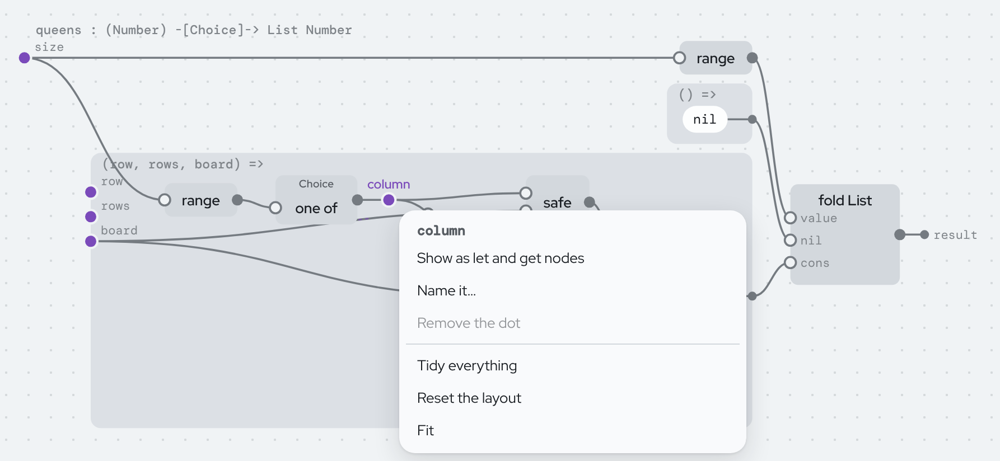
3.3 Dots: where a value starts and branches
A dot is where a value starts and branches out to every place that uses it. Two things are dots:
- A function's inputs, on its frame's left edge.
- A let. Click any wire to put a dot on it. Select the dot to give it a name, or leave it unnamed: then it shows as
•1,•2, a handle that's never stored. Drag from the dot to another input to share the value there.
In the code, a dot is the binder of ((b) => body)(value). There is no let node. Removing a dot with one wire out puts the value back on that wire.
A dot that nothing reads is a step done only for its effect, like each print in main. Those are drawn hollow.
A dot whose wires run far across the graph can be drawn differently: right-click it and pick Show as let and get nodes. The dot becomes a let node where the value is made, and each use gets a small get node beside it with the same name, so no long wire is needed. It is only a way of drawing (it's kept in layout.json); the code is the same dot. Show as wires turns it back.
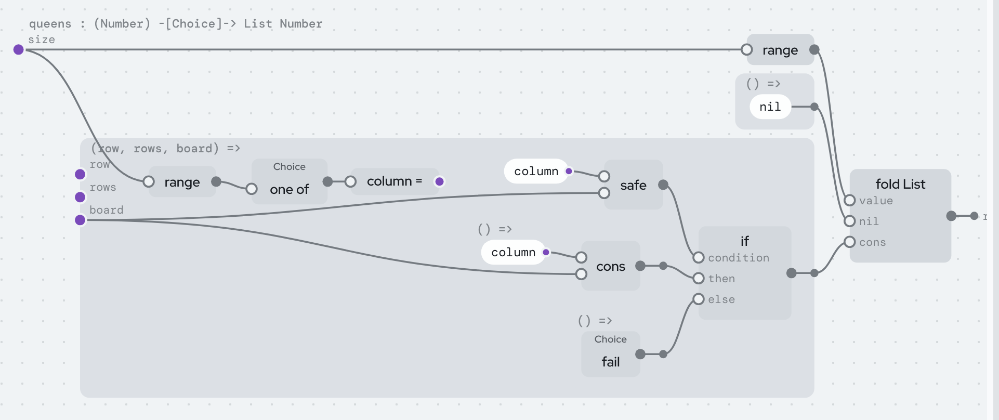
3.4 Frames: functions not called yet
A frame is a function as a value. Its inputs are dots on its left; what it gives back leaves on its right. A whole definition is a frame too: its title shows its name and inferred type, e.g. queens : (Number) -[Choice]-> List Number.
Frames nest, and a node can't leave the frame its inputs come from. If you drag a node out, the frame grows to keep it inside.
3.5 Holes: the program is allowed to be unfinished
A hole (□) is a value not filled in yet. It knows its type. Select it and the inspector lists only fillings that fit: variables in scope, calls (which arrive with one hole per input), constructors, numbers, text, functions, and "match …" / "fold …" for each variable whose type has cases. A program with holes runs until it reaches one.
Try it. Open Insertion sort → insert. In the blocks, click the body of the else case of the if and press Clear to a hole. The hole needs a List Number. The palette offers items, tail, tail′, nil, cons(□, □), append(□, □), insert(□, □), sort(□) and other things that make lists, but not x or head, which are numbers. That's the whole idea of "type errors prevented by the editor": you can't pick what doesn't fit. (Insertion sort itself was written this way, with palette picks only.)
3.6 Writing your own program
- + New program makes an empty program; Save file and Open file… (in the Program tab) write and read it as one JSON file holding the code, names, comments and layout together. Every edit is also kept in the browser as you go.
- + New definition makes a function (give its inputs, or none for an action you can run), a value, or a data type (give its first case).
- The Definition tab lets you rename it, add, reorder and remove inputs (every call gets a hole for a new input, so none is missing an argument), delete it, and Pin this type so edits inside must keep it. A definition from a published module is read-only there; Copy into my program gives you your own version to change.
- Copy (Ctrl+C), cut (Ctrl+X) and Paste the copy here (Ctrl+V on a hole) move subtrees, with their dots and names.
- Show inline draws a call as the called definition's body, in place. It's a view:
code.jsondoesn't change. - Double-click a call to open the function it calls. Selecting a built-in like
+shows how it's defined: its equation, and every direction the solver can run it in.
3.7 Data types, match, if, records
A data type is a definition whose body is a list of variants, each with fields:
type Shape
| circle(radius: Number)
| rectangle(width: Number, height: Number)A variant used as a function is its constructor: circle(2). The standard types Bool, Unit, List a, Pair a b and Optional a are ordinary data types, not built in. Fields are ids, so two libraries can both have a field called name and never collide.
match looks at a value and has one case per variant. In the graph it's an ordinary node: the value goes into its first input, then one frame per case, whose inputs are that case's fields. if is a match on Bool, drawn the same way with inputs labelled condition, then and else.
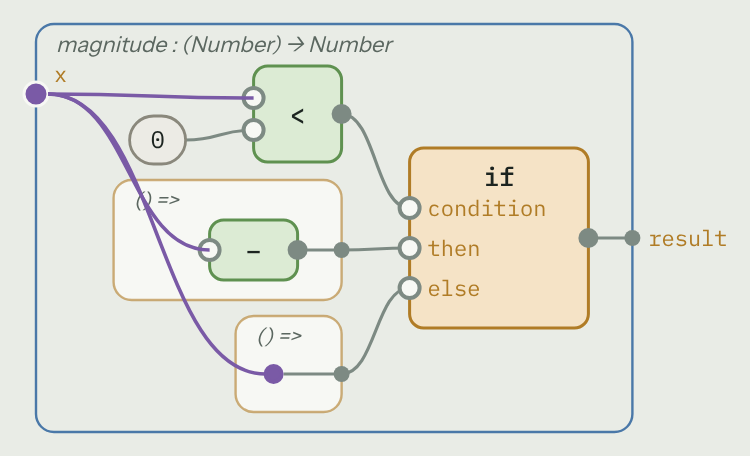
Two gestures keep matches complete:
- Split by cases… on any expression replaces it with a match on a variable you pick, one case per variant, each starting as a copy of what was there.
- Add a case on a data type adds a case with a hole to every match and fold over that type. A missing case can't be written.
Records. A one-variant type is a record, and a field used as a function reads it (fst(p)). set(field, record, value) is the record with one field changed; the field can be a path, set((p) ↦ p.home.city, ada, "Paris"). There's no new construct behind it: it's the field read run backwards with the rest of the record given.
Whole numbers and text. Int is the whole numbers and never overflows (it switches to big integers past 2⁵³). Number is floating point. They don't mix without as number or whole part. Where there's no whole answer there's no answer: quotient by zero is Choice (see 3.9), not a crash. Text has length, slice, split, join all, find and friends, and an emoji counts as one character.
3.8 Loops are folds
A fold is a match where each recursive field also comes with its already-computed result. In insert, the cons(head, tail) case also gets tail′, which is x already inserted into tail:
insert(x, items) =
fold items
nil → [x]
cons(head, tail) with tail′ →
if x < head then cons(x, cons(head, tail)) else cons(head, tail′)In the graph a fold is the same shape as a match; the case frames just have the extra inputs. A fold always finishes. It also works on trees whose children are in a list (an HTML document, JSON): the folded value of the children is the list of their results.
The eight queens program is a fold over the rows: for each row, pick a column and keep it only if it's safe.
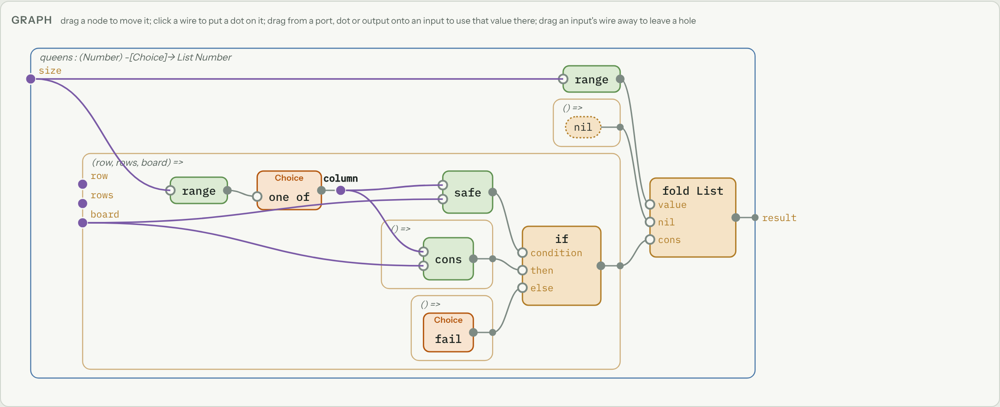
Plain recursion is allowed. The checker uses size-change termination: following every chain of calls that comes back to where it started, some input must get strictly smaller (a piece a match took apart from it). That accepts one shrinking input, Ackermann-style orders, inputs that swap places, and mutual recursion. Anything else gets the Diverge effect in its type, and so does everything that calls it. newton in Calculus has Diverge because nothing in it gets smaller; with fuel(100, …) turns that into Choice (gives up after 100 steps).
Two rules keep "smaller" honest: a data type can't take itself as an input in its own fields, and only functions can be recursive (ones = cons(1, ones) is refused), so all data is finite.
3.9 Effects
A node whose call performs an effect carries a badge. These are the effects:
| effect | what it means | made by | removed by |
|---|---|---|---|
Choice | may give several answers, or none | one of(list), fail(), value of(optional), running a function backwards | first(action, fallback), all(action), count(action), optional(action) |
Abort | stops, with a reason | abort(reason), a missing file | a match with an abort(reason) case; at the top, the run ends with the reason |
Log | debugging output | log(line) | a match with a log(line) case; at the top, standard error |
Console | reads and prints | print(text), read line() | the runtime |
Files | reads and writes files | read file, write file, … | the runtime |
Diverge | might not finish | recursion the checker can't see ends | the runtime, or with fuel(n, action) |
Cells | reads cells, makes cells and formulas | cell(x), formula(action), read(c) | the runtime (below) |
Update | changes a cell | write(c, x) | the runtime |
| yours | what you declare | its operations | a match on them |
Choice is the interesting one. It covers several things other languages have separately:
- Search.
queenspicksone of(range(size))for each row and callsfail()if it isn't safe. There's no search code.firstgives one board,countgives 92,allgives every board. - Absence. There's no
null. "Might not have a value" isChoicein the type, and something must handle it beforemain. When an absent value has to be stored (in a list or a record), it'sOptional:noneorsome(value), a case you match on. - Filtering.
keep(list, test)isall(() => item = one of(list); if test(item) then item else fail()). - Several answers from running backwards. See 3.10.
Abort is failure with a reason, and only one answer. read file aborts with "no such file: notes.txt", and an ordinary match … | abort(why) → … catches it. Rule of thumb: Choice for search and "no answer", Abort for errors someone should read, Optional to keep an absence in data.
Effects you define are declared like a data type whose cases are operations: effect Ask = ask(question: Text) returns Number. Calling ask("width") performs it. Handling it is a match on the computation that performs it, with one case per operation:
handle width() + height()
ask(question) → if question = "width" then 30 else 12So there's no new node for handlers: a handler is a match, an operation is a case, performing is calling. The blocks and the text write such a match as handle, and the Effects example is this program, with Abort handled too. To declare your own, + New definition → Effect.
Two safety rules. A definition's own value must be pure; anything that acts is an action, a function with no inputs (the () => frames handlers take). And the world (Console, Files) may not be touched while a Choice is open: printing on a search path that's later abandoned would still have printed. Handle the search first, then act on its result.
Effects compose with no extra machinery. map has type (List a, (a) -[e]-> b) -[e]-> List b: whatever effects the function you pass has (e), map has too. There's no map vs mapM.
Try it. Open Eight queens → main and press Run main: the first solution for 8, the count (92), and all four solutions for 6.
Cells: values that change, and values computed when asked. One more effect is how a page reacts to clicks, the way Solid.js does it. count = cell(0) makes a cell; read(count) reads it; write(count, 1) changes it (that's the effect Update, and like printing it can't happen inside a search). formula(() => read(count) * 2) is a cell computed from others: the first time something reads it, and again only after a cell it read has changed. A page is a value whose changing parts are actions like () => show(read(count)); the runtime notes which cells each one read and runs again exactly those that read a cell that changed. Because a formula runs only when read and only once, it is also how data can go on forever: a continued fraction whose rest is a formula computes its terms as you ask for them. Both run live on the Cells page; LANGUAGE.md, "Cells", has the details.
3.10 Running any function backwards
Every function has ports: its inputs and its result. Running it forward means giving it the inputs and asking for the result. But you can give it any of its ports and ask for the others. The Run pane lists the ports of whatever definition you're looking at, each with a tick box: ticked ports are ones you give, the others are worked out. Which ones are ticked is stored in layout.json, not in the code, so flipping them changes the direction, not the program.
This isn't limited to arithmetic. Every node has a backwards reading (BACKWARDS.md has the table): a constructor takes its value apart, an if becomes a choice between its cases, a fold becomes an unfold, join text tries every way to cut the text. From Run backwards:
magnitude(theifabove) run backwards from 5 gives −5 and 5.show numbersis a printer written as a fold. Run backwards on"10 20 30"it gives[10, 20, 30]: nobody wrote a parser.greetbuilds"hello, " ++ name; run backwards on"hello, Ada"it findsAda.map(square, list) = [4, 9]run backwards gives four lists.
Some things only run forward (print, floor, comparisons that would need to produce a number), and the checker or the search says so instead of guessing.
A function that says true or false is a set of equations. What used to be a "network" is now an ordinary definition that returns Bool. fall has four inputs:
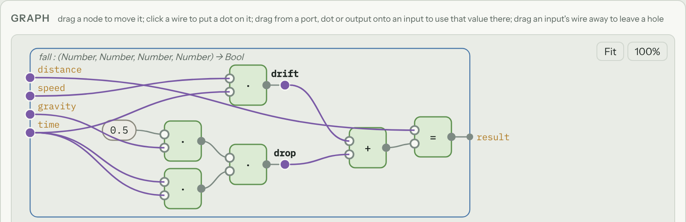
Each equal (=) in it is an equation, and puts several together, and a dot on a wire (drift, drop) is just a name for part of one. Run it with holds ticked and true, and it solves for whichever ports you left unticked, keeping it true. Give it distance and ask for time: thrown down at 5 m/s, 29.62 m takes 2 s. The other root, about −3.02 s, is listed as another answer, and The program it derives for this direction shows the quadratic formula the solver worked out.
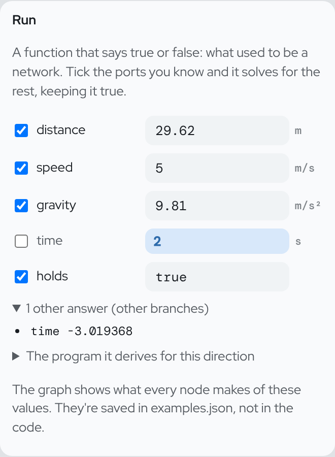
Two more words make true-or-false functions as expressive as wiring:
for somenames a value that isn't an input.rotate(x, y, turn, x′, y′)says: for somelengthandangle,polar(x, y, length, angle)andpolar(x′, y′, length, angle + turn). Its unknowns are the wires inside.henceadds something that follows from what came before.polarsaysx = length · cos(angle)andy = length · sin(angle), hencex² + y² = length². The consequence gives the solver a way in (fromxandyit findslengthwith a square root, no search) without counting as an extra condition.
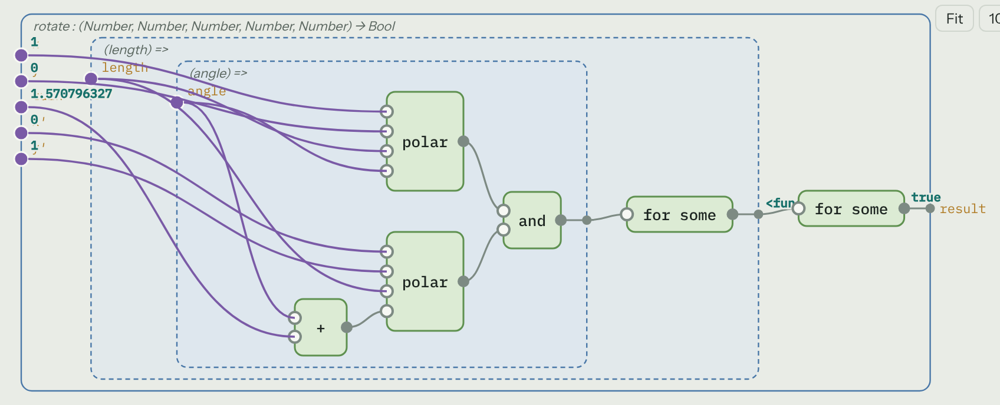
Units are part of the type. Declare m on distance and m/s² on gravity (select an input or a number; Unit shows chips) and the rest is inferred: period comes out in seconds, drift and drop in metres. An edit that would add metres to seconds is refused like any other type error. A plain number is dimensionless; 9.81 m/s² carries its unit.
equal on numbers is approximate: two numbers are equal when they agree to 1e-9 relative, so 0.1 + 0.2 equals 0.3. That's what a wire between two quantities should mean, and it's why fall can be solved and then checked.
Solve nodes do the same inside a program (Relations in programs). The ports you give it are inputs; the ones it solves for come out on its right, all from the same solution:
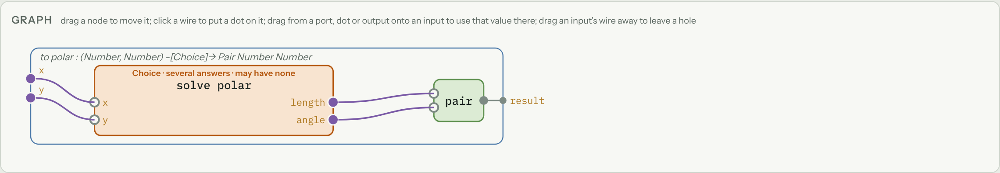
Its effect comes from the direction: one answer that can't fail is pure (the missing addend of a sum); several answers, or possibly none, is Choice. square read backwards (x · x = y) gives both roots of 9 under all (canonical first, so first gives 3), and none for −1. This is the "x² = 4 has a canonical answer" idea, written as a program, and it uses the same Choice as queens.
3.11 Calculus on real functions
derivative(f) reads a function's graph and builds its derivative as another function. Calculus has cubic(x) = x·x·x − x − 1, and cubic′ next to it in the list was generated from it: the chain rule at every node, with each operation's partial derivatives taken from the same table that evaluates and inverts it.
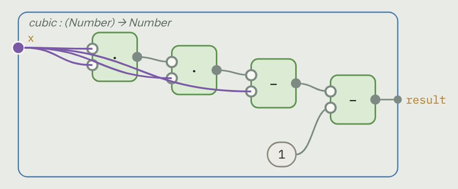
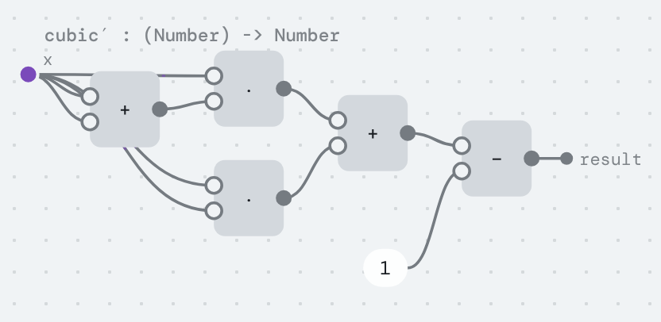
It goes through lets, calls of other definitions (each gets its own generated derivative), if and match (each case differentiated), and folds (a fold that carries value-and-slope pairs, which is forward-mode automatic differentiation written in the language itself). Where it can't read a slope (through floor), the derivative fails there, so its type has Choice. When the function is written right where derivative is applied (a definition, an arithmetic builtin, or a lambda) and every slope can be read, the checker knows the derivative fails only where the function does, and drops the Choice.
That's how the ray marcher gets its normals. Its points are Vecs, and shade asks for unit(gradient((q) ↦ scene(q, time))(p)): gradient is the slope of the scene along x, along y and along z, with time held still, as one Vec. There is no derivative code in the program: change scene and the normals follow. For the GPU, the compiler generates the gradient's code before printing the shader, so the shader gets exact slopes as plain arithmetic.
The other half of calculus is running backwards: zeros of cubic is cubic run backwards from 0, and zeros of x² − 2 gives both ±1.414…, where Newton's method would find one.
3.12 The errors you can't make
Every edit is a pure function from program to program, and it's refused, with the reason in the status line, if the result has an error the program didn't have before. The editor also asks ahead of time: while you drag, the inputs you can reach light up and the others say why not.
| error | status | why |
|---|---|---|
| syntax | impossible | there is no text |
| unknown name, typo | impossible | references are ids picked from a list |
| name clash, shadowing, capture | impossible | binders are ids; equal names get a subscript on screen |
| wrong number of arguments | prevented | a call is made with one hole per input; adding an input adds a hole to every call |
| type mismatch | prevented | holes only offer what fits; edits that add one are refused |
| unit mismatch | prevented | units are part of Number's type |
| missing case | prevented | cases come from the type; Add a case adds hole cases everywhere |
| null / undefined | impossible | there is no null; absence is Choice or Optional |
| integer overflow | impossible | Int is unbounded |
| errors without a reason | checked | Abort carries one; your own effects carry typed ones |
| unhandled effect | checked | effects are in types; main can't keep Choice |
| side effects on an abandoned search | checked | the world can't be touched while a Choice is open |
| comparing functions | checked | equal needs plain data |
| non-termination | inferred | it shows up as Diverge in the type |
| unfinished program | allowed | holes have types; it runs until it reaches one |
sqrt of a negative, ÷ 0 on Number | runtime | Number follows IEEE (NaN, Infinity); Int division by zero has no answer |
| logic errors | not prevented | running backwards gives round-trip laws to test against |
The Checks tab lists these live for whatever program is open. LANGUAGE.md has the full table, with which test shows each row.
3.13 Libraries, and how it runs
Libraries are named by their content. map, keep, reverse, for each and the rest of the prelude are published: each definition's id is the hash of what it is, so a reference to it says exactly which map, forever, and there are no import statements. Two people who publish the same function get the same hash, so their copies are one. Published code can be opened and read, but not edited. A pin freezes a definition's inferred type, so an edit that changes it is reported at the definition, not at some caller far away.
It runs three ways. The evaluator (what Run uses) has no stack limit: summing a million numbers by recursion works. The relational interpreter runs anything backwards. And the compiler (compiler/, COMPILER.md) turns a program into JavaScript; eight queens runs about 600× faster compiled, and its search becomes the backtracking loop you'd write by hand. The compiled programs are tested to print exactly what the evaluator prints.
Some programs are pictures. A program with a colour of (x, y, time) (a record of red, green and blue), or with a red, a green and a blue, is drawn above Run: the compiler turns it into a GPU shader (WGSL) and the browser draws it every frame with WebGPU. Edit any definition it uses and the picture is drawn again. Without WebGPU it's drawn on the CPU, smaller. When a function can't go to the GPU (it uses text, say, or calls itself other than in a loop), the picture says why. Open Shader: ray marching and change a number in sky.
Data can be stored differently from how it's written. NUMBERS.md's proof of concept writes factorial on Peano naturals (zero | succ(Nat)) and runs it on binary, by a rewrite that the definition never mentions (npm run numbers; not in the editor yet).
3.14 Summary: the vocabulary
These are the words the in-editor Guide uses, one word per thing:
| word | what it is |
|---|---|
| node | something that computes a value: a call, an if, a match, a fold, a solve |
| wire | carries a value from an output (or dot) to an input |
| dot | where a value starts and branches: an input of a function, or a let |
| frame | a function not called yet: inputs on the left, result on the right |
| hole | a value not filled in yet, with a type |
| badge | the effects a node has, or the effect it handles |
| solve | any function run backwards: you give some ports, it works out the rest |
What's confusing, and what could be simpler
This is the candid part, and the one list of open problems. Each item says what's there today, why it's a problem, and a proposal. REVIEW.md has the longer review, ROADMAP.md the order of work, and NOTES.md the design discussion behind them. Fixed items are at the end, so the list shows what moved.
1. The graph still crosses itself
Today. The node editor work (NODE-EDITOR.md) fixed most of what made the graph hard to read: values are chips that avoid nodes and each other, nodes stay where you put them, Tidy spaces things out, crossings get bridges and tunnels, and a value used far away can be a let node with get nodes. What's left shows in rotate:
- Tidy removes overlaps but doesn't reorder nodes to cut crossings, so a definition with many inputs fanning into a few nodes is still a weave.
- Wires don't route around nodes; they pass under them (as tunnels) or over input names. In
insert,tailandtail′are hidden under wires.
Proposal. A layered layout (Sugiyama-style, as ELK and Graphviz do) that orders nodes in each column to minimize crossings, as a Tidy option, and names drawn with a background so a wire can't cover them.
2. Cases that are values are drawn as functions
Today. The then and else of an if, and every case with no fields (nil), are drawn inside () => frames, because internally they run only when chosen. In queens, fail sits inside its own frame under else, and nil inside another; in magnitude, the else frame holds nothing but a wire.
Proposal. Draw a zero-input frame as just its contents, with no box, unless it's a real action passed to a handler like first or all.
3. "Output" and "dot" are almost the same thing
Today. A node's output is a filled circle on its right. Dragging it to a second input creates a dot on its wire. Inputs of functions are dots, the solved ports of a solve node are dots, but a node's output isn't.
Proposal. Every output is a dot. A value used once is a dot with one wire; there's nothing to create when you use it a second time. That removes one shape and one gesture.
4. Order is shown by position only
Today. Steps are now drawn flat: in the blocks a run of prints is one list, and in the graph they stack top to bottom in the order they run. But that order is only where the layout put them; drag one and nothing says which runs first. A fold computes its children before the parent, so effects inside a fold run bottom-up, and the docs say "use for each when order matters".
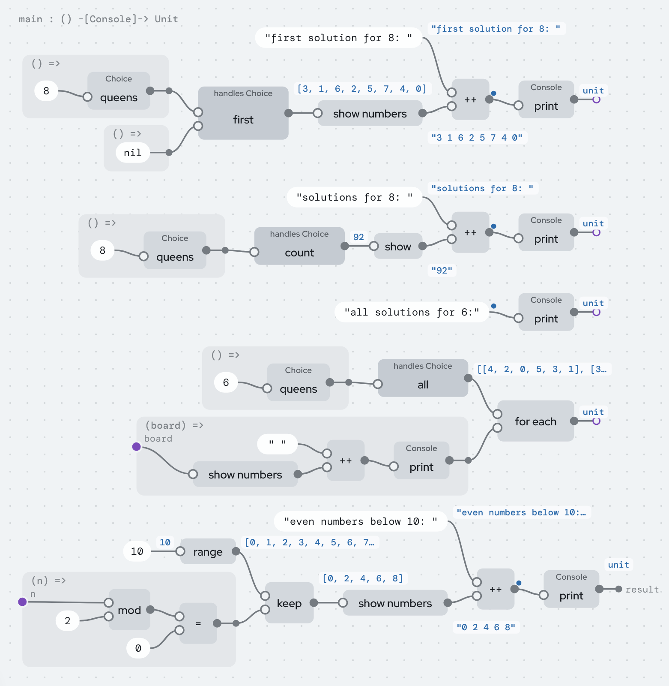
Proposal. Draw a thin "then" wire between effectful steps, the way Unreal Blueprints have execution pins, so order survives moving things around.
5. for some is two nodes for two wires
Today. rotate's two internal wires, length and angle, now share one frame, but each still has its own for some node, one feeding the other. The picture of "a wire that isn't an input" is a frame and two nodes.
Proposal. One for some node for all of a frame's unknowns, or draw an existential as a dot inside the frame with no wire coming in, labelled "some".
6. ~~Effects: nine of them, and the editor shows three~~ (done)
+ New definition has a fourth kind, Effect: its cases are called operations, their fields inputs, and each operation says what it gives back (or "nothing: it never returns", like abort). The palette offers handle Ask in □ for every effect, and the blocks view writes a handler match as handle, so it reads differently from a match on data while staying the same node. The guide lists the effects, and the Effects example uses a declared effect and Abort, built in the editor by clicks only.
What's left is the three ways to say "no answer" (Choice, Abort, Optional); 3.9 gives the rule of thumb.
7. The type syntax has a variable most people won't understand
Today. Types like (List a, (a) -[e]-> b) -[e]-> List b show e, a row variable meaning "whatever effects the function you pass has". root near's type is ((Number) -[Choice, Diverge, e]-> Number, Number) -[Choice, e]-> Number.
Proposal. Show it in words on hover ("has the effects of f") and hide e by default. The badges already say what a node does.
8. Three ways to repeat
Today. fold, plain recursion (with termination inferred) and with fuel (recursion with a limit). They exist for good reasons, but a newcomer will ask which to use.
Proposal. Teach fold first and present recursion as "a fold the checker couldn't see", and fuel as "recursion with a budget".
9. Small inconsistencies worth fixing
- The palette labels some fillings with an empty name ("match , match , fold"), for values that have no name of their own.
+is still three built-ins in tree code (add,subtract,negate), each with its own equation, where one suma + b = totalread in different directions would do.IntandNumbershare every operation's name. The types tell them apart and the palette only offers the right one, but a reader of the blocks can't see which+it is.equalon numbers is approximate (1e-9). That's the right default for a wire, but bit-exact comparison has no name yet.- The docs overlap: LANGUAGE, BACKWARDS, NUMBERS, COMPILER, REVIEW and this tutorial each restate parts of the model and the error table. LANGUAGE.md should be the reference, the rest should link to it.
10. Cells: the handler is the runtime's, and lazy producers say Diverge
Today: Cells (reactivity and values on demand) is handled only by the runtime, because its handler keeps state and handlers in the language can't. And a formula's action may loop, so a lazy producer like √2's terms has Diverge in its type even though each step makes a term.
Proposal: a handler form with state (a match that carries a value from one operation to the next) would let a program write its own Cells handler, for example a server-side renderer or a test that answers reads. A guarded corecursion check (a recursive call under a formula, inside a constructor) would drop Diverge from productive producers.
11. Things that are good and should stay
So the list above isn't read as "everything is wrong":
- Names, comments, layout and examples outside the code. Rename, notation, layout and example values never change meaning, and the Files tab shows it.
- Holes with types and a palette of only what fits.
- Add a case adding holes everywhere.
- One
Choiceeffect covering search, absence, filtering and every backwards run. - Any function runs backwards, including printers, which become parsers.
- Derivatives read off real functions, generated as definitions you can open.
- Non-termination as an inferred effect, rather than a promise.
- Libraries by content hash, with no import statements.
Fixed since the first version of this list
- ~~Sequences are drawn as nesting.~~ Adjacent
prints and lets are one flat list in the blocks and one column in the graph, and aconschain ending innilis onelistnode with an input per item. The tree is unchanged; it's a view. (Showingsucc(succ(zero))as2is the same idea, not done yet.) - ~~The graph doesn't scale.~~ Mostly fixed (NODE-EDITOR.md): value chips that don't overlap, free positions, Tidy, bridges and tunnels, let and get nodes, a right-click menu, Fit centred, a resizable canvas. What's left is item 1.
- ~~Captioned wires and named dots look alike.~~ Values are chips with a border; names are plain text on a dot, a port or a let node, and nothing else puts text on a wire. A name on a wire would just be one more way to draw a named dot (NOTES.md, "The node editor").
- ~~Libraries are visible but frozen.~~ Copy into my program makes a draft of a library definition you can change, and Pin this type freezes one of your own definitions' type.
- ~~
ifshows its cases in stored order.~~ It's alwayscondition,then,else. - ~~Two worlds of functions.~~ A network is now a function returning
Bool, built fromequal,and,for someandhence; one interpreter runs every backwards direction, and the network node kinds, editor and checker are gone (LANGUAGE.md, "One world"). - ~~Builtins are black boxes, and arithmetic exists three times.~~ There's one table of arithmetic (evaluate, invert, differentiate); selecting a built-in shows its equation and directions; the data-type algebra demo was replaced by calculus on real functions. (What's left is item 9's three
+s.) - ~~Relations only cover arithmetic.~~ Every node runs backwards (BACKWARDS.md), and pattern matching is a constructor run backwards.
- ~~Units only exist in networks.~~ Units are part of
Number's type in every program. - ~~
equalworks on functions;showonly on numbers.~~equalneeds plain data;showprints any plain value. - ~~The editor can't make anything.~~ New programs, definitions, data types and inputs; save and open files; copy and paste; values on wires.
- ~~Absence and errors have no reason.~~
Abort,Optionaland effects you declare. - ~~Totality has holes.~~ Strictly positive types, size-change termination, no recursive values (REVIEW.md §1).
Where this lives
- This file:
projectional/TUTORIAL.md. The editor build also turns it intotutorial.htmlat the site's root, linked from the editor's menu bar. - The language reference: LANGUAGE.md. Running backwards: BACKWARDS.md. Numbers and representations: NUMBERS.md. The compiler: COMPILER.md. The review: REVIEW.md. What's next: ROADMAP.md, and the discussion behind it: NOTES.md. The prototype and editor: README.md.
- Screenshots are in
projectional/tutorial/.
Credits
The ideas are mostly Ersagun's, but many were had by others first, and the language borrows freely: content-addressed definitions from Unison, typed holes from Hazel, effect handlers from Koka and OCaml 5, Choice from Verse, running functions backwards from Prolog and miniKanren (whose search relate.ts adapts), fusion from Wadler and from Gill, Launchbury and Peyton Jones, continued-fraction arithmetic from Gosper, cells from Solid.js, and reroute dots from Blender. The Shader: ray marching example uses John C. Hart's sphere tracing and Inigo Quilez's torus, smooth minimum and soft shadow formulas; each definition's comment says so. The example programs wc, Insertion sort and Eight queens are classics (Unix wc, the textbook sort, Bezzel's puzzle).
The full list, feature by feature, saying what's an influence, what's prior work and what's adapted code, with the rule for crediting new work, is CREDITS.md.